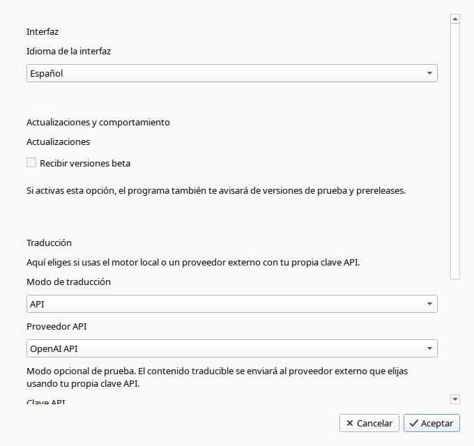

Qué hace
Abre un archivo .elpx, detecta el texto traducible y genera una copia en el idioma que elijas.
Para profesorado y personas no técnicas
ELPX Translator sirve para traducir proyectos de eXeLearning. Puedes elegir entre la versión de escritorio y la versión web.

Qué es
Abre un archivo .elpx, detecta el texto traducible y genera una copia en el idioma que elijas.
Sobre todo para docentes que ya tienen materiales creados y quieren reutilizarlos sin volver a traducir todo a mano.
No hace falta saber programar, usar terminal ni entender detalles técnicos sobre modelos de IA.
Dos versiones
ELPX Translator tiene una versión de escritorio y una versión web. La diferencia principal es cómo traduce cada una.
Recomendada si quieres trabajar en local y no dependes de una clave API.
Útil si quieres traducir desde el navegador y dispones de tu propia clave API.
Descargas
La página consulta GitHub Releases y muestra la última versión estable disponible y, si existe, la beta más reciente. En Linux verás tanto el paquete .deb como la AppImage.
Si quieres recibir avisos de versiones beta dentro del programa, activa esa opción en la configuración. Por defecto está desactivada.
Versión estable
La opción recomendada para la mayoría de personas.
Última beta
Si quieres probar antes los cambios más recientes y ayudarnos a detectar fallos.
Cómo se usa
Selecciona el proyecto .elpx que quieres traducir.
Marca el idioma de origen y el idioma de destino.
La aplicación crea un nuevo archivo para que puedas revisarlo y seguir trabajándolo en eXeLearning.
Rendimiento
La aplicación incluye cuatro modos para adaptarse mejor a tu equipo. No hace falta entender detalles técnicos: basta con elegir el que mejor encaje con tu forma de trabajar.
Prioriza que el ordenador siga respondiendo con comodidad mientras haces otras cosas. Puede tardar más, pero molesta menos al resto del sistema.
Es la opción recomendada para la mayoría de personas. Busca un punto razonable entre velocidad y comodidad de uso.
Usa más recursos para intentar terminar antes. Puede ser útil si quieres reducir tiempos y no necesitas usar mucho el equipo al mismo tiempo.
Exprime más el ordenador para ir lo más rápido posible. Conviene usarlo cuando el equipo es potente y no vas a hacer otras tareas importantes a la vez.
Equipo recomendado
No hay una lista cerrada de requisitos mínimos exactos, pero estas referencias ayudan a saber qué esperar antes de instalarla.
Un equipo de 64 bits con al menos 8 GB de RAM suele ser una base razonable para trabajar con más tranquilidad.
Si el ordenador tiene más memoria y varios núcleos de CPU, la traducción suele ir mejor, sobre todo con archivos grandes.
La aplicación puede funcionar en equipos más justos, pero es normal que tarde más y que convenga usar modos como Suave o Equilibrado.
La primera ejecución también necesita espacio libre para descargar el modelo y dejarlo guardado en la caché local.
Capturas

Privacidad e IA
La aplicación usa un modelo abierto de traducción para proponer el texto en otro idioma. Su trabajo es ayudarte con la traducción automática del contenido del proyecto.
Para la mayoría de idiomas, la aplicación usa M2M100 418M, un modelo abierto publicado por Facebook AI. Está preparado para poder ejecutarse en un ordenador corriente sin depender de un servicio externo.
Cuando la traducción incluye euskera, la aplicación usa modelos abiertos de la familia OPUS-MT, desarrollados en el entorno académico de Helsinki-NLP y la Universidad de Helsinki.
En ambos casos se trata de modelos abiertos, pensados para poder descargarse y ejecutarse localmente. Por eso la traducción se hace en tu equipo y no depende de una plataforma comercial externa.
El contenido del archivo se procesa en tu ordenador durante la traducción.
No envía tu proyecto a un servicio externo para traducirlo. Solo puede conectarse a internet para descargar el modelo la primera vez y para comprobar si hay nuevas versiones.
Problemas conocidos
La aplicación puede ahorrar mucho trabajo, pero todavía hay casos en los que la revisión manual sigue siendo importante.
Algunos títulos de navegación, nombres breves de actividades o etiquetas muy cortas pueden traducirse de forma poco natural o directamente incorrecta.
Esto ocurre porque, cuando el texto es muy breve y no aporta contexto suficiente, el modelo puede interpretarlo como si fuera un nombre propio, una categoría o una etiqueta técnica distinta de lo que realmente es.
Determinados iDevices con lógica propia, mensajes internos o formatos especiales no siempre se traducen completamente.
En estos casos, puede ocurrir que parte del contenido quede en el idioma original, que algunos textos automáticos no cambien o que ciertos elementos necesiten retoque manual dentro de eXeLearning.
La herramienta está pensada para acelerar el trabajo, no para sustituir una revisión final del material.
Conviene comprobar especialmente los títulos, instrucciones, actividades interactivas, textos incrustados en imágenes o tablas y cualquier contenido que tenga valor didáctico sensible.
La calidad de la traducción puede variar según el par de idiomas, el tipo de texto y la estructura del proyecto.
Los textos largos y con contexto suelen salir mejor que las etiquetas sueltas, los menús, los nombres de actividades o los fragmentos muy técnicos.
Preguntas habituales
No. Es un proyecto independiente y no está afiliado oficialmente con el INTEF ni con eXeLearning.
No. La primera vez puede hacer falta para descargar el modelo y también para comprobar si hay nuevas versiones. Después, la traducción trabaja en local.
No conviene prometer eso. La aplicación está pensada para ahorrar mucho trabajo, pero siempre es recomendable revisar el resultado final antes de publicarlo.
Usa el enlace de sugerencias y errores. Si puedes, indica qué sistema operativo usas y adjunta el archivo o una explicación breve del problema.